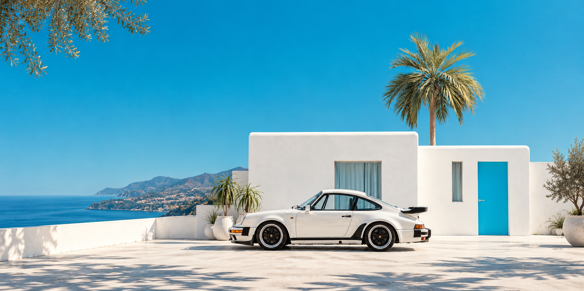

Oldtimer und Youngtimer, die etwas in uns bewegen. Einblicke in unsere Fahrzeugwelt.
Zeitlos in Form. Besonders im Charakter.
Ihr Elfer. In den richtigen Händen.
Ein Porsche ist selten nur ein Fahrzeug. Mit ihm verbinden sich Erinnerungen, besondere Wege und eine Geschichte, die seinen Charakter prägt. Wer sich für einen Verkauf entscheidet, wünscht sich deshalb einen persönlichen und respektvollen Umgang.
Bei Thiel Classics nehmen wir uns Zeit, Ihr Fahrzeug kennenzulernen. Wir betrachten Zustand, Historie und Besonderheiten sorgfältig und besprechen mit Ihnen offen, welcher Weg am besten passt: ein direkter Ankauf oder eine persönliche Vermittlung.
Unser Anspruch ist ein klarer, angenehmer Ablauf und eine Präsentation, die Ihrem Porsche gerecht wird. Persönlich, diskret und mit echter Begeisterung für klassische und zeitlose Fahrzeuge.
Sie möchten Ihren Porsche verkaufen?
Dann freuen wir uns darauf, mehr über Ihr Fahrzeug und seine Geschichte zu erfahren.
Das richtige Fahrzeug.
Ein gutes Gefühl.
Ein Klassiker ist eine persönliche Entscheidung. Wir sprechen mit Ihnen über Modell, Zustand, Historie und die Erwartungen an Ihr Fahrzeug – ob für regelmäßige Ausfahrten oder als Teil einer Sammlung.
Sie möchten ein besonderes Automobil weitergeben oder suchen einen bestimmten Klassiker? Wir besprechen mit Ihnen, ob Ankauf, Suche oder Vermittlung der passende Weg ist.
Persönlich ins Gespräch kommen
IHR KLASSIKER.
Unser nächstes Kapitel?
Wir freuen uns darauf, Ihr Fahrzeug und seine Geschichte kennenzulernen.
Fahrzeug verkaufen